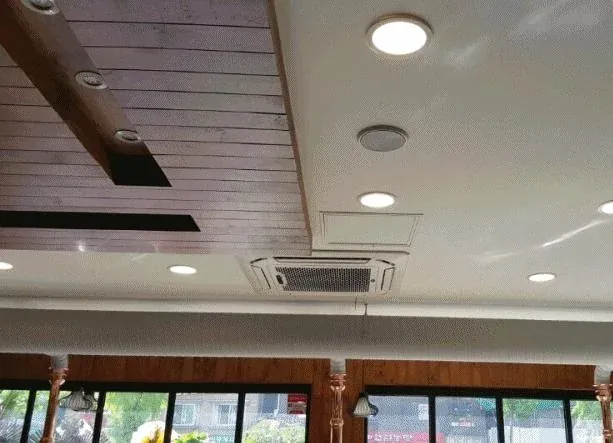

우리 공간에 맞을까요?
공간의 용도와 필요한 냉난방부터 이야기해 주세요. 제품과 설치 방향을 함께 상담합니다.
업체소개 · 조은공조시스템
가정부터 사업장까지 · 조은공조시스템
우리 공간에 맞는 냉난방, 믿고 맡길 곳을 찾으시나요?
15년 차 현장 경험을 바탕으로
제품 선택부터 설계·시공·A/S까지 함께합니다.
광주·전남 냉난방 전문, 조은공조시스템입니다.

현장에서 이어온 시공 경험
말보다 먼저, 실제 시공사진
사진을 누르면 해당 분야의 전체 시공사례를 볼 수 있습니다.
조은공조시스템이 생각하는 좋은 시공
같은 에어컨도, 설치할 공간은 모두 다릅니다.
가정집의 생활공간, 사무실의 업무환경, 매장의 구조와 용도까지. 조은공조시스템은 냉난방기를 고르는 일과 설치하는 일을 함께 생각합니다.
15년 차 시공 경험에 기본을 지키려는 마음을 더합니다. 익숙한 현장도 신중하게 살피고, 작은 부분까지 꼼꼼한 시공을 지향합니다.
믿고 선택하기 위해, 함께 확인할 것
공간의 용도와 필요한 냉난방부터 이야기해 주세요. 제품과 설치 방향을 함께 상담합니다.
신규 설치인지, 이전 설치인지에 따라 필요한 작업이 달라집니다. 현장 조건과 견적 내용을 상담에서 확인해 주세요.
사용 중 불편하거나 점검이 필요할 때 A/S를 문의하실 수 있습니다. 증상과 설치 정보를 알려주시면 상담에 도움이 됩니다.
하나로 이어지는 냉난방 서비스
여러 업체를 따로 찾기 전에, 필요한 작업부터 조은공조시스템과 상담하세요.
원하시는 작업과 설치 조건을 상담합니다.
공간에 맞는 설치 방향을 함께 살핍니다.
설치 목적에 맞는 제품 선택을 상담합니다.
기본에 충실하고 꼼꼼한 설치를 지향합니다.
사용 중 필요한 점검과 사후관리를 상담합니다.
확인할 수 있는 업체 정보
광주·전남 냉난방기 판매 · 설치 · 이전 설치
상담은 편하게 시작하세요
“이 공간에 에어컨을 설치하고 싶어요.” 그 이야기부터 들려주세요.
사진을 불러오지 못했습니다. 다음 사진으로 넘겨 주세요.
사진을 좌우로 밀어서 넘겨 보세요.화살표 버튼이나 키보드 ← →로 넘겨 보세요.